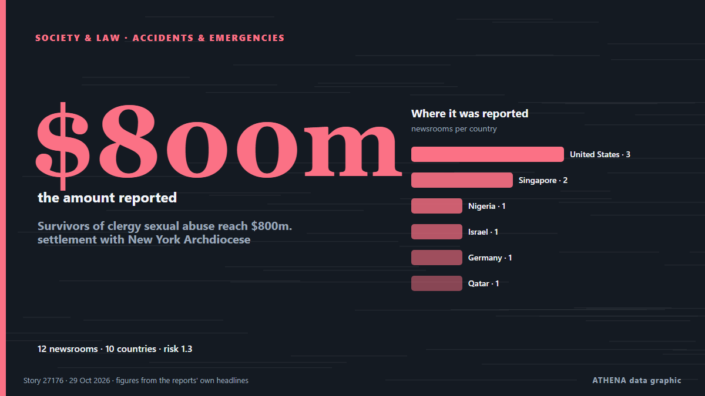

Survivors of clergy sexual abuse reach $800m. settlement with New York Archdiocese

In addition to the $800 million settlement, the archdiocese agreed to release documents pertaining to sexual offenders in the Church. из The Jerusalem Post
Независимые источники: 12 изданий в 10 странах, с 24 окт.; первым сообщил The Straits Times; освещение идёт на спад. ATHENA оценивает риск как низкий (1.3/10), прежде всего из-за тяжести описываемого ущерба и географического и отраслевого охвата. Уверенность — 91 % (высокая); подтверждают независимые источники: 12 изданий, средняя надёжность источников — 75 %. Кто сообщал: 3 СМИ в стране Соединенные Штаты · United States, 2 СМИ в стране Сингапур · Singapore, 1 СМИ в стране Нигерия · Nigeria. Освещение шло с 24 окт. по 29 окт., 120 ч.
Почему это важно: Правовые и политические изменения меняют права, обязанности и государственные услуги для затронутых людей.
Что изменилось: 1 новое сообщение за 24 часа до 29 окт..
Заголовки приводятся на английском языке, как они были опубликованы.
Коротко в цифрах
Отобрано, оценено и написано по опубликованной методологии ATHENA. Ни один редактор не вмешивается в отдельные события. Как это создаётся ›
| 24 Oct 09:00 UTC | 1 |
|---|---|
| 24 Oct 15:00 UTC | 0 |
| 24 Oct 21:00 UTC | 6 |
| 25 Oct 03:00 UTC | 1 |
| 25 Oct 09:00 UTC | 1 |
| 25 Oct 15:00 UTC | 2 |
| 25 Oct 21:00 UTC | 0 |
| 26 Oct 03:00 UTC | 0 |
| 26 Oct 09:00 UTC | 0 |
| 26 Oct 15:00 UTC | 0 |
| 26 Oct 21:00 UTC | 0 |
| 27 Oct 03:00 UTC | 0 |
| 27 Oct 09:00 UTC | 0 |
| 27 Oct 15:00 UTC | 0 |
| 27 Oct 21:00 UTC | 0 |
| 28 Oct 03:00 UTC | 1 |
| 28 Oct 09:00 UTC | 0 |
| 28 Oct 15:00 UTC | 0 |
| 28 Oct 21:00 UTC | 0 |
| 29 Oct 03:00 UTC | 0 |
| 29 Oct 09:00 UTC | 1 |
| 24 Oct 12:54 UTC | 0.0 |
|---|---|
| 26 Oct 10:18 UTC | 1.5 |
| 29 Oct 09:24 UTC | 1.3 |
Откуда эти цифры
Значимость
Риск
Уверенность
Освещение — кто сообщил и когда
заголовок в оригинале · открывает источник- The Straits Times · Сингапур · SingaporeNew York Archdiocese close to settling sexual abuse claims for over US$800 million
- Vanguard · Нигерия · NigeriaNew York Archdiocese agrees to pay $800m to sex abuse victims
- Gothamist (New York City) · Соединенные Штаты · United StatesNY Archdiocese will soon settle $800M clergy sexual abuse claims
- NPR · Соединенные Штаты · United StatesArchdiocese of New York agrees to $800 million settlement over sexual abuse claims
- The Straits Times · Сингапур · SingaporeAbuse survivors approve $800 million settlement with Archdiocese of New York
- The Jerusalem Post · Израиль · IsraelSurvivors of clergy sexual abuse reach $800m. settlement with New York Archdiocese
- DW English · Германия · GermanyNew York Archdiocese to pay $800 million to sex abuse survivors
- Al Jazeera English · Катар · QatarNew York Archdiocese agrees to pay $800m to 1,300 sexual abuse survivors
- Times of India · Индия · IndiaNY archdiocese agrees $800m deal with 1,300 abuse survivors; signatures pending
- PBS NewsHour · Соединенные Штаты · United StatesNew York's archdiocese and survivors of clergy abuse agree to $800 million legal settlement
- The Independent · Великобритания · United KingdomNew York Catholic Archdiocese to pay $800 million in historic abuse settlement
- IOL · Южно-Африканская Республика · South AfricaNew York Archdiocese to pay R13,3 billion to sex abuse victims
- Greek Reporter · Греция · GreeceNew York Archdiocese Reaches $800M Sexual Abuse Settlement